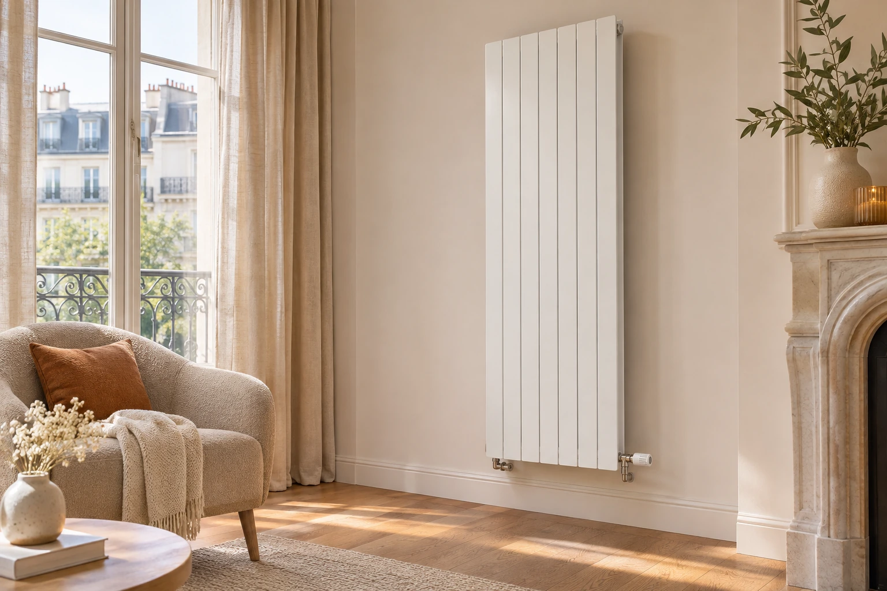

02ÉQUIPEMENTS
Une chaleur adaptée
Nous installons des chaudières, poêles, radiateurs et planchers chauffants. Du choix de l’appareil à la diffusion de chaleur, nous vous aidons à préciser les équipements concernés par votre projet et à préparer une étude personnalisée.
Parler de mon projet